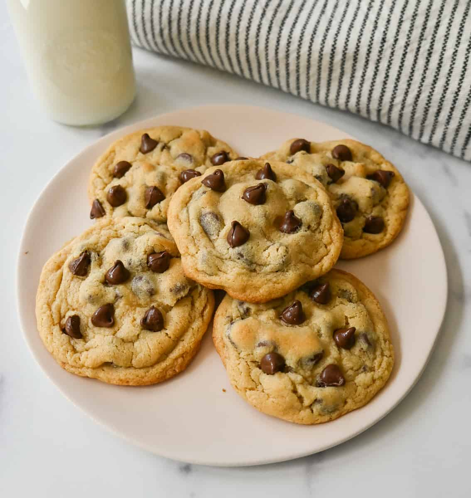

Description

These are the only chocolate chip cookies I ever make. This recipe is truly the GOAT.
Ingredients
- 240g all purpose flour
- 1/2 tsp baking soda
- 1/2 tsp salt
- 3/4 c unsalted butter, melted
- 1 c packed brown sugar
- 1/2 c white sugar
- 1 egg + 1 egg yolk
- 1 T vanilla extract
- 2 c semisweet chocolate chips
Steps
- In an electric mixer, whip butter and sugars together for a few minutes until lightened in color.
- Add egg and egg yolk and mix on low speed. Add vanilla extract.
- In a separate bowl, mix flour, baking soda and salt.
- With mixer on slow, slowly add flour mixture until completely incorporated.
- Pour in chocolate chips and stir a few times until evenly distributed.
- Scoop out tablespoon sized dollops onto baking sheet lined with parchment paper.
- Bake at 325 degrees for 11-14 minutes, until edges are just turning golden brown.